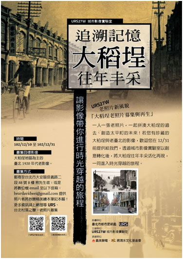

大稻埕老照片募集與新生 |
 |
URS27W 城市影像實驗室將有嶄新的風貌與全新的系列活動了！ 由義美聯合電子商務股份有限公司(義美聯電)與蔣渭水文化基金會所合作組成的空間經營團隊，將於102年12月起進駐URS27W 城市影像實驗室，並於103年1月中旬起，展開一系列的活動。 經營團隊將發揮URS開放平台的特色，將城市影像實驗室打造成具有太平町在地特色的公眾空間，藉由舉辦地區議題及促進地區活化相關活動來發揚URS空間的「你們的」、「大伙的」精神。 URS27W期待透過臺北城市影像的蒐集，與創意的影像實驗，讓臺北的都市再生活動及URS的精神被大眾認識。因此URS27W在102/12/10至102/12/31這段時間，將向大稻埕地區的居民及社會大眾，募集大稻埕地區在1910年代到1920年代左右的老照片，希望藉由這些老照片，去追溯與記憶大稻埕往年的風貌。 之後我們還會利用現代的數位技術，將老照片影像進行活化再生的創作，例如製作動畫，演示大稻埕地區隨著時間的地景轉變；或是將大稻埕老街景製作成互動動畫展示。這些影像創意與活化再生的成果都將在URS27W緊接著於103/1/17開始舉行的「時光漩渦-穿越大稻埕」活動中進行展出。
|